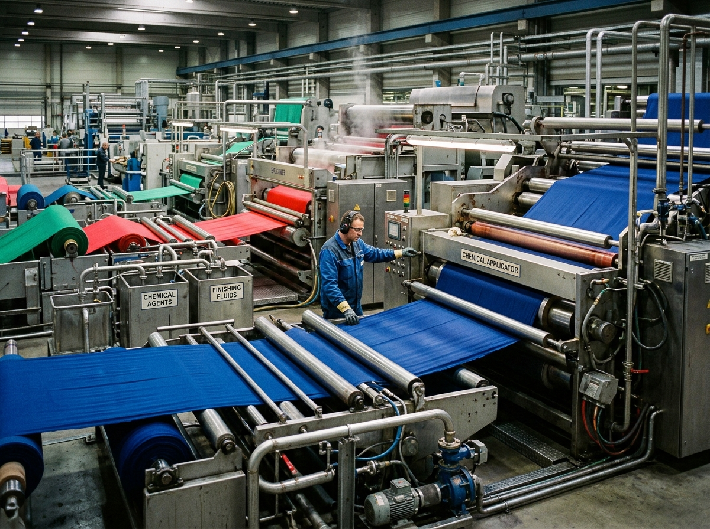

Textile ChemistryTextile Chemicals
Chemical sourcing categories for textile wet processing, dyeing, printing and fabric finishing requirements.
Representative Categories (Verification Required):
Pre-Treatment Auxiliaries
Wetting Agents
Scouring Agents
Dye Fixing Agents
Optical Brighteners
Fabric Softeners
Finishing Auxiliaries